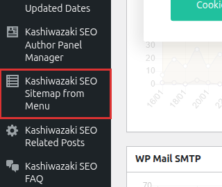

インストール・初期設定
Kashiwazaki SEO Sitemap from Menu のインストール方法と、メニュー選択やリストスタイルなどの基本設定を説明します。
インストール手順
WordPress管理画面から プラグイン > 新規追加 に移動し、「Kashiwazaki SEO Sitemap from Menu」を検索します。または、プラグインのZIPファイルを プラグイン > 新規追加 > プラグインのアップロード からアップロードします。
「今すぐインストール」をクリックし、インストール完了後「有効化」をクリックします。
管理画面の左メニューに「Kashiwazaki SEO Sitemap from Menu」が追加されます。クリックして設定画面を開きます。

サイトマップを表示するには、事前にWordPressの 外観 > メニュー でナビゲーションメニューが作成されている必要があります。
前提条件: ナビゲーションメニューの作成
本プラグインはナビゲーションメニューの構造をもとにHTMLサイトマップを生成します。まだメニューを作成していない場合は、以下の手順で作成してください。
管理画面の 外観 > メニュー に移動します。
メニュー名を入力し「メニューを作成」をクリックします。
固定ページ、投稿、カテゴリ、カスタムリンクなどをメニューに追加し、ドラッグ&ドロップで階層構造を設定します。この階層構造がそのままサイトマップの構造になります。
サイトマップ専用のメニューを別途作成することも可能です。サイトのナビゲーションメニューとは異なる構成でサイトマップを表示したい場合に便利です。
基本設定
メニューの選択
サイトマップのソースとなるナビゲーションメニューを選択します。WordPressに登録されているすべてのメニューがプルダウンで表示されます。
リストスタイル
サイトマップの表示スタイルを5種類から選択できます。
| スタイル | 説明 |
|---|---|
| 箇条書き（bullet） | 標準的な黒丸の箇条書きリスト。最もシンプルで汎用的なスタイルです。 |
| 丸（circle） | 白丸の箇条書きリスト。子階層との区別がつきやすいスタイルです。 |
| 四角（square） | 四角マーカーの箇条書きリスト。視認性の高いスタイルです。 |
| なし（none） | マーカーなしのリスト。インデントのみで階層を表現します。 |
| ディレクトリツリー（directory tree） | ファイルシステムのツリー表示風のスタイル。階層構造が視覚的にわかりやすいスタイルです。 |
ツールチップ設定
ツールチップ機能を有効にすると、サイトマップのリンクにマウスをホバーした際に、対象ページのメタ説明文がツールチップとして表示されます。以下のSEOプラグインのメタ説明文に対応しています。
| 対応SEOプラグイン | 取得するメタデータ |
|---|---|
| Yoast SEO | _yoast_wpseo_metadesc メタフィールドからメタ説明文を取得 |
| All in One SEO | _aioseo_description メタフィールドからメタ説明文を取得 |
| Rank Math | rank_math_description メタフィールドからメタ説明文を取得 |
| SEOPress | _seopress_titles_desc メタフィールドからメタ説明文を取得 |
ツールチップが表示されるのは、上記SEOプラグインでメタ説明文が設定されているページのみです。メタ説明文が未設定のページではツールチップは表示されません。